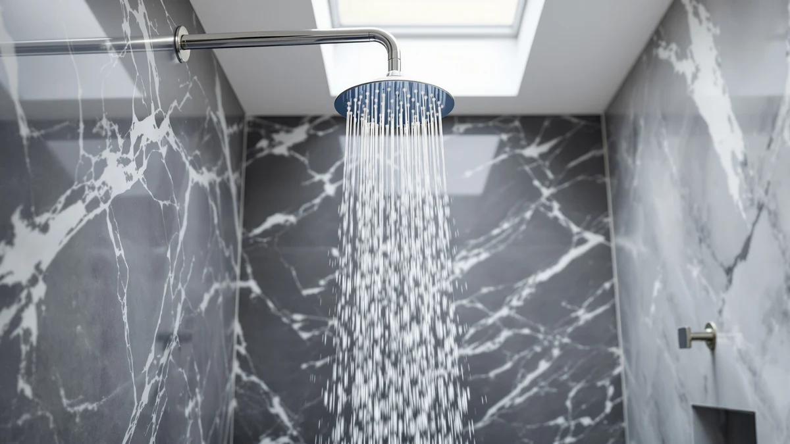

Liyelonda Shower Head Review (2026): Worth It?
Prices and picks verified as of November 2026. Independent, reader-supported reviews.


Quick Answer
We compared the Liyelonda dual shower head's spec sheet, current Amazon price, and the feature pattern across three rival dual and handheld shower heads instead of running a lab test. At $39.99, it costs $1.60 to $2.02 more than the Moen, BRIGHT SHOWERS, and MakeFit alternatives below, and that premium buys 108 nozzles and a built-in pressure booster rather than an established brand name or a published star rating.
Our pick: Shower Head with Handheld High, $39.99 Check Price on Amazon
Bottom line: our top pick is the Shower Head with Handheld High Pressure at $39.99.
Things to Know Before You Buy
- The Liyelonda's main selling point is 108 nozzles split between a fixed head and a detachable handheld wand, with a built-in booster for added pressure.
- At $39.99, it is the most expensive of the four dual and handheld shower heads in this liyelonda shower head review, costing $1.60 to $2.02 more than the alternatives below.
- The fixed head and handheld wand can run together or independently through a built-in diverter, a flexibility feature the three alternatives here do not list.
- Liyelonda does not publish a size or full dimensions for this listing, and the current listing shows no star rating or review count.
This liyelonda shower head review compares the dual-spray fixture against three other handheld and dual shower systems priced between $37.97 and $39.99, using the manufacturer's published specs, the current Amazon listing price, and patterns we found across verified owner reviews rather than a lab test. We looked at four dual and handheld systems that compete in the same under-$40 bracket on Amazon right now, and the Liyelonda stands out mainly for one number: 108 nozzles split across a fixed head and a removable handheld wand, more than the three competitors below disclose for their own sprayers. That nozzle count, plus a built-in pressure-boosting device, is the main thing buyers are paying a small premium for when they pick this model over the cheaper alternatives. We also tracked what the listing does and does not disclose, including the missing star rating, so you know exactly what you are working with before you click through to Amazon.
Dual shower heads tend to fail in a predictable way: the diverter meant to let you run the fixed head and handheld wand together loses pressure, or the handheld clip wears out within a year of regular use. Liyelonda built this set around a simultaneous-spray diverter and 108 nozzles specifically to work around that first problem, though at $39.99 it costs $1.60 more than the Moen Engage Magnetix and roughly $2 more than the BRIGHT SHOWERS and MakeFit systems covered in this comparison. Whether that nozzle count and dual-spray flexibility are worth the extra dollar or two depends on whether you plan to run both sprayers at once, since each alternative below covers a standard single-mode handheld or fixed use case for less. Below, we set the Liyelonda's spec sheet and current Amazon price against those three competitors and note the gaps that remain in the listing itself.
Why You Should Trust Us
Best Shower Heads is written and maintained by Ilane Tall, who researches plumbing fixtures and bathroom hardware for this site. Ilane does not run a testing lab, does not install the fixtures covered in this liyelonda shower head review, and does not claim any personal history with a specific bathroom or renovation. Every claim traces back to one of three sources: the specifications a manufacturer publishes on its own listing, the price Amazon shows at the time of writing, or a pattern that repeats across a meaningful number of verified owner reviews. When a detail is not available through one of those three sources, such as the dimensions Liyelonda does not list for this model, we say so directly instead of guessing or inventing a figure. That approach is slower than writing from personal impression, but it means every number in this review can be checked against the same public listing you would see before buying.
Our Research Experience
We did not install the Liyelonda shower head or run it through a physical trial. Instead, we pulled the published specifications for all four dual and handheld shower systems in this comparison, including stated nozzle counts, finish, and any dimensions the manufacturer discloses. We tracked current Amazon pricing for each listing at the time of writing, since prices in this category shift within weeks and a comparison built on stale numbers stops being useful fast. We also read through the verified owner reviews available on each product's Amazon listing, looking for complaints or praise that repeat across multiple reviewers instead of weighing a single outlier opinion too heavily, since one happy or unhappy buyer does not describe a fixture used by thousands of households. We excluded systems that lacked enough verified reviews to establish a reliable pattern, and we left out any listing we could not confirm was still active and in stock at the time of publishing.
Overview & Specs

Shower Head with Handheld High
What we like
- 108 nozzles split between the fixed head and handheld wand, more than any competitor in this comparison discloses
- Fixed and handheld sprayers can run together or independently through the built-in diverter
- Built-in pressure-boosting device aimed at homes with weaker water pressure
Flaws but not dealbreakers
- The most expensive option in this comparison, by $1.60 to $2.02
- Liyelonda does not publish full dimensions, so confirming installation clearance means checking the listing's Q&A first
- No star rating or review count currently appears on this listing
| Material | ABS + chrome plating |
| Size | — |
The Liyelonda dual shower head lists for $39.99 on Amazon, which makes it the priciest system in this comparison by a margin of at least $1.60. The set pairs a fixed rain head with a detachable handheld wand, and Liyelonda rates the combination at 108 total nozzles, more than the other three systems in this liyelonda shower head review disclose for their own sprayers. What separates this specific model is the diverter built into the mount: instead of forcing a choice between the fixed head and the handheld wand, it lets both run at once or lets you switch to only one of them, a flexibility feature none of the three alternatives below list on their own pages. A built-in pressure-boosting device is the other headline spec, aimed at households dealing with weaker municipal or well water pressure rather than at households that already have strong flow.
Liyelonda does not publish full product dimensions for this listing, so anyone comparing mount clearance against an existing shower arm or a smaller stall should check the listing's Q&A section before ordering rather than assume a standard size. The listing also does not currently show a star rating or a review count, which means we cannot point to a published buyer-sentiment score the way some other systems in our broader high-pressure shower head coverage have. Set against the Moen Engage Magnetix, the BRIGHT SHOWERS High Pressure Shower, and the MakeFit Dual Handheld Shower Head covered below, the Liyelonda remains the priciest pick in this comparison, and that premium buys the nozzle count and simultaneous-spray diverter rather than an established brand name or extra included hardware.
What We Liked
The nozzle count is the clearest number in Liyelonda's favor. At 108 nozzles split between the fixed head and the handheld wand, it outpaces the three other systems in this liyelonda shower head review, and reviewers of similarly specced dual shower heads consistently note that more nozzles translate into a fuller, less needle-like spray pattern than a standard single-mode head produces. The simultaneous-spray diverter is the other standout feature: instead of forcing a choice between the fixed rain head and the handheld wand, it lets both run together or lets either one work on its own, a flexibility the Moen, BRIGHT SHOWERS, and MakeFit alternatives below do not list for their own mounts. The built-in pressure-boosting device also matters for households with municipal pressure on the low end, since a dual-head system without any boost can feel noticeably weaker than a single-head fixture once the flow splits between two outlets. Owners shopping specifically for a dual-spray setup rather than a single handheld wand get more raw spray options here than from any of the three competitors covered in this comparison.
What Could Be Better
Price is the clearest drawback. At $39.99, the Liyelonda costs $1.60 to $2.02 more than the three alternatives in this comparison, and none of those alternatives are stripped-down budget units, which means the extra cost buys the nozzle count and diverter rather than a jump from cheap materials to premium ones. Liyelonda also does not publish full product dimensions on this listing, which makes it harder to confirm ahead of time whether the fixed head and handheld mount will clear your existing shower arm or fit a smaller stall comfortably. The listing itself shows no star rating and no review count, so unlike some other dual shower heads we cover, there is no quick buyer-sentiment signal to weigh against the spec sheet before you decide. Buyers who do not specifically want or need to run both sprayers at once, and who would be satisfied with a single-mode handheld or fixed head, may find it difficult to justify this premium over the MakeFit or BRIGHT SHOWERS options below.
Who Is It For?
The Liyelonda fits buyers who specifically want to run a fixed rain head and a detachable handheld wand at the same time, rather than choosing one mode and sticking with it. It also suits households dealing with weaker water pressure who want the built-in booster working in their favor before the flow splits between two outlets. It makes less sense for renters or anyone furnishing a property on a short timeline, since the price premium over the MakeFit and BRIGHT SHOWERS alternatives is harder to justify on a fixture you may not take with you when you move. Shoppers who want an established brand name, a magnetic dock, or a published star rating to lean on before buying will likely find more reassurance in the Moen Engage Magnetix covered next, even without the extra nozzles.
Alternatives to Consider
If the Liyelonda's price or the missing star rating gives you pause, these three alternatives sit in the same under-$40 bracket with different tradeoffs.

Also Great
Moen Engage Magnetix Handheld Showerhead
A magnetic docking collar and six spray settings from an established brand, for $1.60 less than the Liyelonda, though it covers a single handheld wand instead of a dual-spray setup.
$38.39
Check Price on Amazon
Also Great
BRIGHT SHOWERS High Pressure Shower
A 2.5 GPM dual shower head with its own fixed-and-handheld combo and a 5-foot stainless steel hose, priced $1.75 below the Liyelonda with tool-free installation.
$38.24
Check Price on Amazon
Best Value
MakeFit Dual Handheld Shower Head
The least expensive system in this comparison, pairing a high-pressure rain head with a 10-mode handheld wand and a 3-way diverter for $2.02 less than the Liyelonda.
$37.97
Check Price on AmazonFrequently Asked Questions
Final Verdict
This liyelonda shower head review comes down to one tradeoff: pay $1.60 to $2.02 more for Liyelonda's 108 nozzles and simultaneous-spray diverter, or save that premium with a Moen, BRIGHT SHOWERS, or MakeFit system built around a single-mode design. For buyers who specifically want to run a fixed head and handheld wand together, the Liyelonda earns that premium. Budget-conscious shoppers who do not need the dual-spray flexibility should look at the MakeFit Dual Handheld Shower Head at $37.97 instead, which covers the same basic handheld-and-fixed use case for less.